<template id="scene2-problem-template">
  <div
    data-composition-id="scene2-problem"
    data-width="1920"
    data-height="1080"
    data-duration="11.5"
  >
    <div class="canvas" data-layout-allow-overlap>
      <!-- Scattered .env files -->
      <div class="env-files">
        <div class="env-file env-1">
          <div class="env-icon">📄</div>
          <div class="env-name">project-a/.env</div>
          <div class="env-lines">
            <div class="env-line">OPENAI_KEY=sk-...</div>
            <div class="env-line">ANTHROPIC_KEY=sk-...</div>
          </div>
        </div>
        <div class="env-file env-2">
          <div class="env-icon">📄</div>
          <div class="env-name">project-b/.env</div>
          <div class="env-lines">
            <div class="env-line">OPENAI_KEY=sk-...</div>
            <div class="env-line">CF_API_TOKEN=...</div>
          </div>
        </div>
        <div class="env-file env-3">
          <div class="env-icon">📄</div>
          <div class="env-name">project-c/.env.local</div>
          <div class="env-lines">
            <div class="env-line">ANTHROPIC_KEY=sk-...</div>
            <div class="env-line">VERCEL_TOKEN=...</div>
          </div>
        </div>
        <div class="env-file env-4">
          <div class="env-icon">📄</div>
          <div class="env-name">~/.zshrc</div>
          <div class="env-lines">
            <div class="env-line">export OPENAI_KEY=...</div>
            <div class="env-line">export CF_ACCOUNT=...</div>
          </div>
        </div>
        <div class="env-file env-5">
          <div class="env-icon">📄</div>
          <div class="env-name">docker-compose.env</div>
          <div class="env-lines">
            <div class="env-line">SUPABASE_URL=...</div>
            <div class="env-line">STRIPE_KEY=sk-...</div>
          </div>
        </div>
      </div>

      <!-- X mark overlay -->
      <div class="x-overlay">
        <div class="x-line x-1"></div>
        <div class="x-line x-2"></div>
      </div>

      <!-- Solution: KeyDock vault -->
      <div class="solution-container">
        <div class="vault-icon">
          
        </div>
        <div class="vault-title">KeyDock</div>
        <div class="vault-subtitle">Local encrypted vault</div>
      </div>

      <!-- Floating particles -->
      <div class="particle particle-1"></div>
      <div class="particle particle-2"></div>
      <div class="particle particle-3"></div>
    </div>

    <style>
      [data-composition-id="scene2-problem"] .canvas {
        width: 1920px;
        height: 1080px;
        background: #0a0a0f;
        position: relative;
        overflow: hidden;
        font-family: "Inter", sans-serif;
      }

      /* .env files scattered around */
      [data-composition-id="scene2-problem"] .env-files {
        position: absolute;
        width: 100%;
        height: 100%;
      }

      [data-composition-id="scene2-problem"] .env-file {
        position: absolute;
        background: rgba(255, 255, 255, 0.04);
        border: 1px solid rgba(255, 255, 255, 0.08);
        border-radius: 12px;
        padding: 16px;
        width: 280px;
        opacity: 0;
      }

      [data-composition-id="scene2-problem"] .env-icon {
        font-size: 20px;
        margin-bottom: 8px;
      }

      [data-composition-id="scene2-problem"] .env-name {
        font-family: "JetBrains Mono", monospace;
        font-size: 13px;
        color: rgba(255, 255, 255, 0.7);
        margin-bottom: 10px;
      }

      [data-composition-id="scene2-problem"] .env-lines {
        display: flex;
        flex-direction: column;
        gap: 4px;
      }

      [data-composition-id="scene2-problem"] .env-line {
        font-family: "JetBrains Mono", monospace;
        font-size: 11px;
        color: rgba(255, 255, 255, 0.35);
        padding: 3px 6px;
        background: rgba(255, 255, 255, 0.03);
        border-radius: 4px;
      }

      /* Positions */
      [data-composition-id="scene2-problem"] .env-1 { top: 100px; left: 120px; }
      [data-composition-id="scene2-problem"] .env-2 { top: 350px; left: 80px; }
      [data-composition-id="scene2-problem"] .env-3 { top: 600px; left: 150px; }
      [data-composition-id="scene2-problem"] .env-4 { top: 200px; right: 100px; }
      [data-composition-id="scene2-problem"] .env-5 { top: 500px; right: 150px; }

      /* X mark overlay */
      [data-composition-id="scene2-problem"] .x-overlay {
        position: absolute;
        top: 0;
        left: 0;
        width: 100%;
        height: 100%;
        display: flex;
        align-items: center;
        justify-content: center;
        opacity: 0;
        pointer-events: none;
      }

      [data-composition-id="scene2-problem"] .x-line {
        position: absolute;
        width: 800px;
        height: 4px;
        background: linear-gradient(90deg, transparent, rgba(239, 68, 68, 0.6), transparent);
        border-radius: 2px;
      }

      [data-composition-id="scene2-problem"] .x-1 { transform: rotate(45deg); }
      [data-composition-id="scene2-problem"] .x-2 { transform: rotate(-45deg); }

      /* Solution vault */
      [data-composition-id="scene2-problem"] .solution-container {
        position: absolute;
        top: 50%;
        left: 50%;
        transform: translate(-50%, -50%);
        display: flex;
        flex-direction: column;
        align-items: center;
        opacity: 0;
        z-index: 10;
      }

      [data-composition-id="scene2-problem"] .vault-icon {
        width: 100px;
        height: 100px;
        margin-bottom: 20px;
      }

      [data-composition-id="scene2-problem"] .vault-img {
        width: 100px;
        height: 100px;
        border-radius: 20px;
        box-shadow: 0 0 60px rgba(124, 58, 237, 0.3);
      }

      [data-composition-id="scene2-problem"] .vault-title {
        font-size: 48px;
        font-weight: 700;
        color: white;
        letter-spacing: -0.02em;
      }

      [data-composition-id="scene2-problem"] .vault-subtitle {
        font-size: 20px;
        color: rgba(255, 255, 255, 0.5);
        margin-top: 8px;
      }

      /* Particles */
      [data-composition-id="scene2-problem"] .particle {
        position: absolute;
        width: 6px;
        height: 6px;
        background: #7c3aed;
        border-radius: 50%;
        opacity: 0;
      }

      [data-composition-id="scene2-problem"] .particle-1 { top: 300px; left: 400px; }
      [data-composition-id="scene2-problem"] .particle-2 { top: 700px; left: 800px; }
      [data-composition-id="scene2-problem"] .particle-3 { top: 400px; left: 1300px; }
    </style>

    <script src="https://cdn.jsdelivr.net/npm/gsap@3.14.2/dist/gsap.min.js"></script>
    <script>
      (function () {
        const tl = gsap.timeline({ paused: true });

        const cid = '[data-composition-id="scene2-problem"]';
        const envs = [cid + ' .env-1', cid + ' .env-2', cid + ' .env-3', cid + ' .env-4', cid + ' .env-5'];
        const xOverlay = cid + ' .x-overlay';
        const solution = cid + ' .solution-container';
        const particles = [cid + ' .particle-1', cid + ' .particle-2', cid + ' .particle-3'];

        // Phase 1: .env files scatter in from various directions
        envs.forEach((env, i) => {
          const rot = [-15, 10, -8, 5, -12][i];
          tl.fromTo(
            env,
            { opacity: 0, scale: 0.6, rotation: rot * 2, y: -30 },
            { opacity: 1, scale: 1, rotation: rot, y: 0, duration: 0.5, ease: "back.out(1.2)" },
            0.3 + i * 0.15
          );
        });

        // Phase 2: X mark overlay fades in to show "this is the problem"
        tl.to(xOverlay, { opacity: 1, duration: 0.4, ease: "power2.out" }, 2.5);

        // Phase 3: .env files fade out / scatter away
        tl.to(envs, { opacity: 0, scale: 0.5, rotation: 20, duration: 0.5, ease: "power2.in" }, 3.2);

        // Phase 4: X mark fades out
        tl.to(xOverlay, { opacity: 0, duration: 0.3 }, 3.5);

        // Phase 5: Solution appears
        tl.set(solution, { scale: 0.5 }, 3.8);
        tl.to(solution, { opacity: 1, scale: 1, duration: 0.8, ease: "back.out(1.7)" }, 3.8);

        // Phase 6: Particle burst
        particles.forEach((p, i) => {
          tl.fromTo(
            p,
            { scale: 0, opacity: 1, x: 0, y: 0 },
            {
              scale: 1,
              opacity: 0,
              x: [200, -150, 100][i],
              y: [-100, 150, -80][i],
              duration: 1.2,
              ease: "power2.out",
            },
            4.2 + i * 0.1
          );
        });

        // Hold the solution scene with a subtle pulse
        tl.to(solution, { scale: 1.03, duration: 0.4, ease: "sine.inOut" }, 5.5);
        tl.to(solution, { scale: 1, duration: 0.4, ease: "sine.inOut" }, 5.9);

        window.__timelines = window.__timelines || {};
        window.__timelines["scene2-problem"] = tl;
      })();
    </script>
  </div>
</template>
